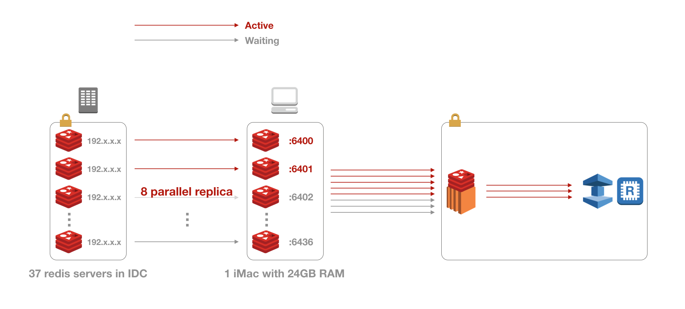
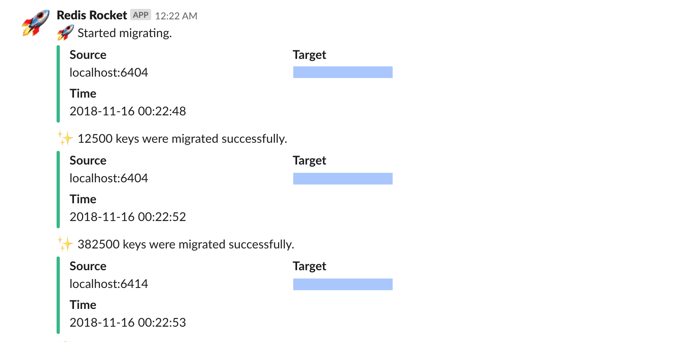
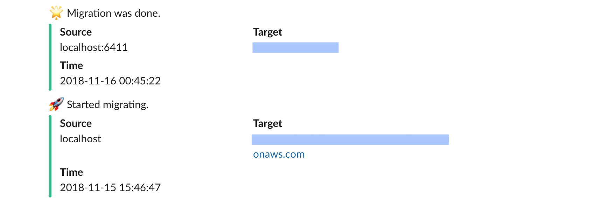
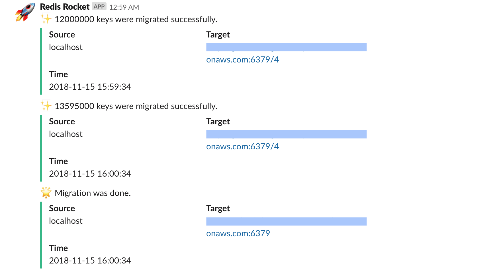
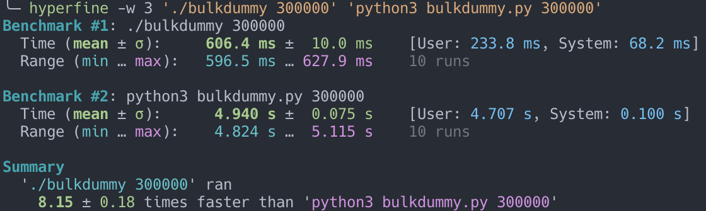

IDC에서 AWS로 Redis 데이터 이전하기
Feb 1, 2019 00:00 · 4819 words · 10 minute read
작년 3분기 즈음에 내가 맡고 있는 두 개의 게임중 한 게임의 서버 인프라를 IDC에서 AWS로 이전해야하는 일이 생겼다.
기존 인프라 구성은 LB (Load Balancer) 뒤에 게임 서버 (웹서버와 애플리케이션 서버가 공존)가 있고 게임 서버 뒤에는 DB (MySQL) 및 캐시 (Memcached, Redis) 서버가 있는 간단한 3 티어 구조였다. 기존 인프라 구성이라고는 했지만 이전 후의 인프라 구성도 Managed 서비스를 사용한다는 점을 제외하면 전과 동일하다.
중규모 이상의 인프라를 이전해보는건 처음이었는데, 총 세 번의 이전 시도 끝에 전체 인프라 이전을 마칠 수 있었다. 물론 나 혼자 진행한건 아니고 TD 한 분과 함께 작업을 진행했다.
TD (Technical Director): 사내 게임 클라이언트/서버의 전반적인 기술 지원과 기술 리딩을 담당하는 시니어 개발자
우리가 이전해야할 데이터는 다수의 MySQL (~200GB, 로그 제외)과 Redis (~20GB, 33M keys) 서버에 저장된 데이터였는데 이중에 나는 Redis 데이터 이전을 맡게되었다. 이 글에서는 IDC의 Redis 데이터를 어떻게 AWS로 이전했는지에 대한 방법을 소개한 뒤 그에 대한 간단한 회고를 남겨보려고 한다.
상황분석
여느 이전 작업들과 마찬가지로 가장 골치 아팠던 부분은 데이터 이전 작업이었다. 그나마 다행이었던건 별도의 데이터 스키마 변환 작업이나 추가적인 동기화 프로세스가 필요한 무중단 이전이 아니었기에 좀 더 수월하게 진행할 수 있었다.
기존 IDC 인프라 구성에서 MySQL과 Redis 서버들은 여느 인프라 구성과 마찬가지로 웹서버에서만 접근할 수 있는 프라이빗 서브넷에 위치해 있었고 이전 해야할 Redis 서버 정보는 다음과 같았다.
- Redis 서버: 37대 (Redis 2.6 / 2.8 혼용)
- 오버헤드를 제외한 총 순수 데이터 용량: 20GB 전후
- 총 키 개수: 33M (33,000,000) 전후
가장 쉬운 방법은 모든 Redis 서버들을 대상으로 AWS ElastiCache 인스턴스로 레플리케이션을 구성하는 것이다. 그러나 IDC에서 Redis가 위치한 프라이빗 서브넷에서는 아웃바운드 또한 막혀 있었기 때문에 위 방법은 사용할 수 없었다. 또한, ElastiCache는 퍼블릭 인바운드 접근이 불가능하며 가능하다해도 레플리케이션을 구성할 때 multi-master를 갖는 slave 서버 구성은 불가능하기 때문에 별도의 데이터 병합 과정이 필요하기도 했다.
데이터 병합 과정이 필요했던 이유는 사용중인 서버는 37대였지만 각 서버가 역할이 달랐을뿐 서버별로 실제로 차지하고 있는 메모리 용량 자체는 크지 않았기 때문에 이전시에는 비용/관리적인 측면을 고려해 하나의 서버로 통합하려고 했었기 때문이다.
결론적으로 1) 프라이빗 서브넷과 AWS 네트워크망을 연결해줄 일종의 프록시를 구성하는 작업과 2) Redis 데이터를 병합하는 작업이 필요했고 다음의 아키텍처를 구성할 수 있었다.
아키텍처
어쨌든간에 데이터를 옮기려면 프라이빗 서브넷에서 데이터를 끌어올 수 있어야하는데 다행히 IDC 프로바이더에서 VPN 서비스를 제공하고 있었기에 VPN을 통해 사내 네트워크망에서도 Redis 서버들에 직접 접근이 가능했다. 따라서 1번에서의 프록시는 VPN 클라이언트를 사용할 수 있으며 외부 네트워크 접속이 가능한 개발용 데스크탑인 iMac을 대신 사용하기로 했다. (iMac 5K with 24GB RAM)
2번의 데이터 병합은 두 가지 정도의 선택지가 있었는데 첫 번째는 모든 Redis 서버들의 rdb 스냅샷을 하나로 병합해 S3에 올린 뒤 ElastiCache에서 복원하는 방법이었고, 두 번째는 모든 키에 대해 dump/restore를 수행해 서버간에 키를 직접 이동시키는 방법이었다.
첫 번째 방식은 rdb 병합후 데이터 정확성만 보장할 수 있다면 가장 쉽고 빠른 방법이었을테지만 official한 rdb 병합툴도 없고 서드파티도 딱히 보이지 않았으며 rdb에 대해 아주 잘 알고있는 상태는 아니었기 때문에 직접 병합툴을 작성하는 일은 시간적 여유도 없을뿐더러 데이터 정확성 보장이 불확실했기 때문에 채택하지 않았다. 따라서 아주 빠르진 않지만 데이터 정확성은 보장할 수 있는 dump/restore 방식을 채택하기로 했다.
또한 이전에도 언급했지만 ElastiCache의 경우 퍼블릭 접근이 제한되어있기 때문에 ElastiCache에 접근이 가능한 EC2를 한 대 띄워 해당 EC2의 로컬 Redis 서버로 데이터를 이전 시켜놓고 EC2에서 ElastiCache로 한 번 더 이전하기로 했다.
그래서 최종적으로 다음과 같은 전체 데이터 이전 아키텍처를 구성할 수 있었다.

구현
데이터 이전 프로세스는 다음과 같다.
- 레플리케이션으로 데이터를 끌어오는 부분과 EC2로 데이터를 이전하는 부분을 하나의 작업으로 묶음
- 위 작업을 수행하는 프로세스를 8개 띄움
- 37개의 로컬 포트를 준비한 뒤 각 작업별로 포트를 할당해 로컬 Redis 서버를 띄움 (
localhost:64xx) - 최대 8개의 로컬 Redis 서버는 각각 IDC Redis 서버와 레플리케이션을 맺음 (
slaveof 192.x.x.x 6379) - 레플리케이션으로 데이터 동기화가 완료되면 레플리케이션을 끊고 EC2로 데이터 이전을 시작
- EC2로의 데이터 이전이 완료되면 로컬 Redis 서버 셧다운 및 덤프 파일 삭제후 프로세스 반환
프로세스 수를 8개로 제한한건 데스크탑에서는 가용 램 용량에 한계가 있기 때문에 동시에 많은 수의 로컬 Redis 서버를 띄워서 레플리케이션을 구성하면 램이 고갈되는 문제가 발생할 수 있다. 실제로 테스트시 프로세스 수를 좀 더 큰 값으로 올렸을 때 램이 고갈되어 프리징 직전까지 간 적이 있다.
코드로 보면 다음과 같다.
def run(port, server):
local_server = 'localhost:{}'.format(port)
fetch(server, local_server)
migrate_all(local_server, 'ec2 server ip')
shutdown(local_server)
clear_dump(port)
def main(start, end):
...
pool = Pool(processes=8)
pool.starmap(run, zip(local_ports, legacy_servers))
스크립트를 실행하고 중간에 작업 디렉터리를 확인해 보면 다음과 같이 temp rdb와 dump rdb가 동시에 최대 8개까지 존재하는걸 볼 수 있다.
$ ls -l
... dump6400.rdb # 동기화 완료된 로컬 서버 포트. EC2 이전까지 완료되면 rdb 삭제
... dump6409.rdb
... dump6405.rdb
... dump6406.rdb
... temp_6401.rdb # 동기화 진행중인 로컬 서버 포트.
... temp_6408.rdb
... temp_6403.rdb
... temp_6402.rdb
레플리케이션을 통한 데이터 동기화
# src: IDC 서버
# dst: 로컬 서버
def fetch(src, dst):
...
r = redis.StrictRedis(host=dsthost, port=dstport, charset='utf8')
try:
r.ping()
except redis.exceptions.ConnectionError:
subprocess.call([
'redis-server',
'--port', dstport,
'--dbfilename', 'dump{}.rdb'.format(dstport),
'--daemonize', 'yes',
], stdout=subprocess.DEVNULL)
print('[{}] [{}|{}] Slave status: {}'.format(now(), src, dst, r.slaveof(srchost, srcport)))
...
특정 로컬 포트로 ping 테스트를 해보고 실패하면 해당 로컬 포트로 Redis 서버를 띄운 다음 IDC의 Redis 서버와 레플리케이션을 맺는다. (r.slaveof(srchost, srcport))
def fetch(src, dst):
...
while True:
master_link_status = r.info('replication')['master_link_status']
master_sync_in_progress = r.info('replication')['master_sync_in_progress']
if master_link_status == 'up' and master_sync_in_progress == 0:
r.slaveof()
break
print('[{}] [{}|{}] All keys is fetched.'.format(now(), src, dst))
레플리케이션을 맺으면 slave는 master와 데이터 동기화를 시작한다. 데이터 정확성을 보장하기 위해선 모든 데이터의 동기화가 잘 이루어졌는지를 반드시 체크해야한다. 그렇다면 레플리케이션 도중 데이터 동기화가 완료되는 시점은 어떻게 알아낼 수 있을까?
Redis slave 서버의 레플리케이션 정보에는 master와의 연결 상태를 알 수 있는 master_link_status라는 플래그가 있다. 연결이 비정상적이거나 최초로 master와 full sync를 하는 동안에는 down으로 설정되며, full sync가 완료되고 정상적인 레플리케이션 연결이 수립되면 up으로 설정된다. 또한, 현재 master와의 동기화 진행 여부를 알려주는 master_sync_in_progress라는 플래그가 있는데, 동기화가 진행중이면 1, 완료되면 0으로 설정된다.
따라서 master_link_status와 master_sync_in_progress의 값이 각각 up과 0이 되는 시점을 동기화 완료 시점이라고 판단할 수 있으며, 이 때 레플리케이션을 끊으면 된다. (r.slaveof() = slaveof no one)
일반적인 상황에서는 저 두 값이 각각
up과0인 경우를 정상적인 레플레케이션 “상태”라고 판단하지, 동기화 완료 “시점”이라고 보는건 조금 애매할 수 있다. 왜냐하면 레플리케이션에서 동기화는 지속적으로 이루어지기 때문인데, 다만, 나의 경우는 서버 점검 시간이었기 때문에 더 이상의 추가 데이터 업데이트가 이루어지지 않는 상황이었으므로 이를 동기화 완료 “시점”이라고 표현한 것이다.더 덧붙여서 좀 더 정확히는 저 두 값만 가지고는 레플리케이션 상태가 정말 정상인지를 판단하기는 어려우며
master_last_io_seconds_ago등의 다른 동기화 시간과 관련된 정보도 부가적으로 확인해 볼 필요가 있다.
데이터 이전
데이터 이전은 단순한 dump와 restore의 조합이다.
def migrate_all(src, dst):
...
r = redis.StrictRedis(host=srchost, port=srcport, charset='utf8')
keyspace = r.info('keyspace')
print('[{}] [{}|{}] Started migrating.'.format(now(), src, dst))
jobs = [gevent.spawn(migrate, src, dst, int(k[2:])) for k in keyspace.keys()]
gevent.joinall(jobs)
print('[{}] [{}|{}] Migration was done.'.format(now(), src, dst))
데이터 이전 또한 병렬로 처리하기 위해 각 keyspace 별로 gevent job을 만들어 동시에 키 이전을 수행했다.
def migrate(src, dst, db):
count = 2500
cursor = 0
...
while True:
# 2,500개 키 순회
cursor, keys = srcr.scan(cursor, count=count)
pipeline = srcr.pipeline(transaction=False)
# dump
for key in keys:
pipeline.pttl(key)
pipeline.dump(key)
result = pipeline.execute()
# restore
pipeline = dstr.pipeline(transaction=False)
for key, ttl, data in zip(keys, result[::2], result[1::2]):
if data != None:
pipeline.restore(key, ttl + 10800000 if ttl > 0 else 0, data)
pipeline.execute(False)
...
if cursor == 0:
break
각 단일 키에 대해서 하나씩 pttl, dump 및 restore를 실행하면 Redis 서버로의 네트워크 I/O가 매번 발생하기 때문에 속도가 극도로 느려진다. 그래서 파이프라이닝을 통해 여러개의 커맨드를 동시에 전송함으로써 네트워크 I/O를 대폭 줄이고 이전 속도를 향상시켰다. (여기서는 요청당 2,500개)
또한 ttl 값에는 약 3시간 정도의 시간을 더하고 있는데 이는 ttl이 걸린 모든 키에 대해 서버 점검 시간만큼의 시간을 더해 expire time을 지연시키려고 한 것이다.
결과
서버 점검 후 약 00시 22분에 시작해 01시 00분쯤에 모든 Redis 데이터 이전을 마쳤다. 데스크탑과 EC2 인스턴스는 서로간 컴퓨팅 스펙 및 네트워크 환경이 다르고 데스크탑에서는 37개중 동시에 최대 8개의 서버 데이터만을 이전했기 때문에 두 구간에서 속도차가 발생하긴 했지만 도합해서 40분이 조금 안걸리게 마칠 수 있었다.
- 데스크탑 → EC2: 23분 (약 24,000 keys/s)
- EC2 → ElastiCache: 14분 (약 40,000 keys/s)
데스크탑 → EC2 이전 시작 (00:22)

데스크탑 → EC2 이전 완료 (00:45) 및 EC2 → ElastiCache 이전 시작 (00:46)

EC2 → ElastiCache 이전 완료 (01:00)

회고
회고는 이전을 다하고 난 뒤 스스로에게 가진 질문들을 기반으로 답변을 하는 형태로 풀어나가겠다.
데스크탑 프록시밖에 선택지가 없었나?
이전해야했던 데이터 용량이 20GB 전후로 작았기 때문에 큰 고민없이 데스크탑을 프록시로 선택할 수 있었다. 물론, 만약 데스크탑으로 감당할 수 없는 데이터 용량이었다면 퍼블릭망 접근이 가능한 별도의 IDC 서버를 따로 요청을 하는 등의 다른 방법을 더 고려해봤을 것 같다.
EC2에서 rdb 백업으로 바로 옮기지 않은 이유는?
EC2를 생성하기 전에 이미 ElastiCache 인스턴스를 생성해놓았고 ElastiCache 인스턴스 생성시간이 생각보다 길어서 rdb 백업부터해서 ElastiCache 인스턴스 재생성 및 데이터 복원까지의 시간을 생각하면 원래 방식으로 옮기는것과 비교해서 시간적인 이득이 크지는 않을 것 같아 그냥 진행했었다. 이것 또한 데이터 용량이 작아서 그렇지 컸다면 백업 방식을 사용하지 않았을까 한다.
EC2 ssh 터널링은 고려하지 않았는지?
이전후에 되돌아보니 가장 아쉬웠던 부분이다. 평소에도 자주 사용하던 ssh 터널링이었는데 데이터 이전 코드에만 신경 쓰다가 이전 당시에는 고려하지 못하고 끝나고나서야 생각이 났기 때문에 아예 시도조차 못해봤다. 터널링을 했다면 절반의 시간으로 끝낼 수도 있었을 것 같다.
성능이 조금 아쉽다
결론적으로 보면 같이 작업을 진행하던 TD분이 MySQL 데이터를 옮기는 시간보다는 일찍 끝났기 때문에 Redis 데이터 이전 속도를 빠르게한들 전체 데이터 이전 작업 시간을 앞당기지는 못했을 것 같지만, 그래도 개인적으로 조금 아쉬운 부분이기는 하다. 크게 두 가지 부분에서 아쉬웠는데 하나는 비대칭 병렬성, 다른 하나는 언어이다.
비대칭 병렬성이라고 하면, 위 아키텍처에서는 총 최대 8개의 프로세스를 띄우고 안에서 다시 한 번 keyspace별로 gevent job을 나누는데 어떤 특정 Redis 서버에서는 keyspace별로 키 개수의 차이가 아주 커서 특정 keyspace가 다른 keyspace보다 훨씬 빠르게 끝나 결국 키가 많은 keyspace를 맡은 job은 병렬성의 이점을 얻지 못하는 상황을 생각하면 된다. 키가 많은 keyspace 안에서도 일정 개수마다 구간을 나눠 다시 한 번 병렬처리를 할 수 있었을테지만 당시에는 키 개수가 막대한 수준의 양은 아니었기 때문에 어느 정도 이전 시간이 길어지는건 허용했었다. 그래도 지금 생각해보니 그래도 적용해보지 못한 아쉬움이 없진않다.
언어적인 측면에서는 이전시 사용한 Python도 좋지만 동시성을 내장하고 있으면서 컴파일이 가능한 Go와 같은 언어를 사용했으면 더 좋았을 것 같다라는 생각이 든다. 어느 정도 차이가 날까 궁금해서 비록 로컬 환경이지만 한 번에 2,000개의 명령어를 실행하는 파이프라인 코드를 두 언어로 작성한 뒤 30만개의 키를 넣고 성능 비교를 해보았다.

단순한 벤치마크 테스트를 돌려보니 Go로 작성한 스크립트가 Python으로 작성한 스크립트보다 약 8.15배 정도 빠르게 측정되었다. 물론 이건 언어뿐만 아니라 언어별로 지원하는 Redis 라이브러리의 구현체별로도 다를 수 있기 때문에 아주 정확한 언어 대 언어 벤치마킹이라고 하기는 어렵다. 하지만 그걸 감안하더라도 위에서 보이는 성능차는 꽤나 크기 때문에 실제로 스크립트를 Go로 작성했다면 좀 더 빠르게 처리할 수 있지 않았을까라는 생각이 든다. 물론 네트워크 대역폭의 한계같은 외부적인 요인도 고려해야하기 때문에 실제로 해보기 전까진 얼마나 차이가 날지는 모르겠으나 고루틴으로 비대칭 병렬성까지 개선했다면 기존보다 훨씬 빠르게 처리할 수 있었을 것 같다.
- DynamoDB 배치 작업 재시도 구현 (Exponential Backoff)
- [Go로 구현하는 블록체인] Part 7: 네트워크
- [Go로 구현하는 블록체인] Part 6: 트랜잭션 2
- [Go로 구현하는 블록체인] Part 5: 주소
- [Go로 구현하는 블록체인] Part 4: 트랜잭션 1
- [Go로 구현하는 블록체인] Part 3: 영속성 및 CLI
- [Go로 구현하는 블록체인] Part 2: 작업 증명
- [Go로 구현하는 블록체인] Part 1: 기본 프로토타입
- [프로젝트 오일러] 최대 경로합 문제 (18/67)
- 시간에 의존하는 코드를 위한 테스트 작성하기